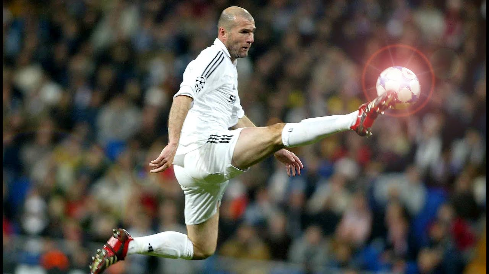
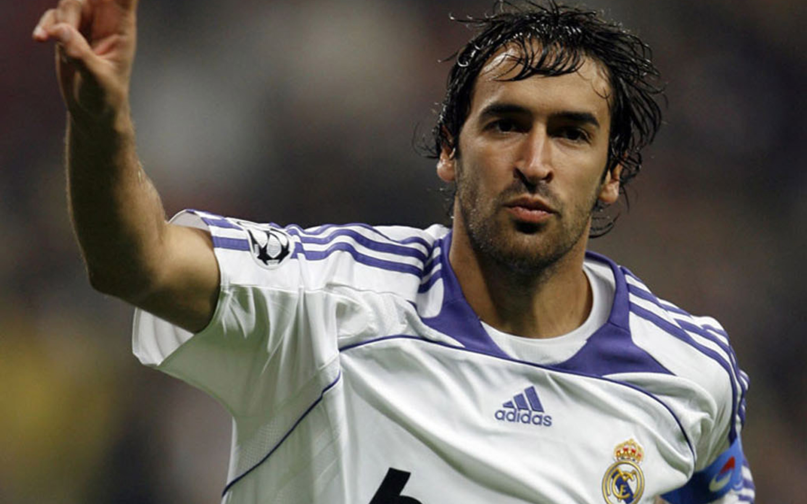
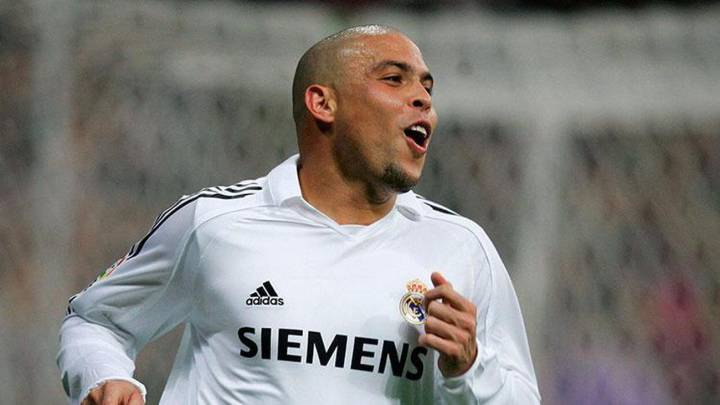

LEYENDAS DEL EQUIPO MERENGUE
Los mejores jugadores de la historia del Real Madrid La Saeta Di Stéfano es junto a Pelé, Beckenbauer, Maradona y Cruyff; uno de los mejores jugadores del siglo XX. En el Real Madrid, él consiguió marcar 307 goles, en 403 partidos oficiales, a lo largo de 11 temporadas. Estas cifras lo sitúan en el primer lugar de la lista de los mejores jugadores de la historia del Real Madrid.

Los mejores jugadores de la historia del Real Madrid Zinedine Zidane fue un mago con el balón. Él consiguió muchos reconocimientos con el Madrid, pero la afición recuerda sobre todo su espléndido gol en la final de la Champions League. Zidane no solo es uno de los mejores jugadores de la historia del Real Madrid, sino de todo el fútbol mundial.
Los mejores jugadores de la historia del Real Madrid Raúl González, el ángel de Madrid, es una leyenda del club blanco que consiguió todos los títulos posibles durante las 16 temporada que vistió esta camiseta. Siempre será muy recordado por la afición madridista como uno de los mejores delanteros de la historia del club.
Los mejores jugadores de la historia del Real Madrid Ronaldo es uno de los grandes goleadores que han pasado por el Madrid. Él no solo ha dejado huella en el equipo blanco, sino también en la selección brasileña. Ronaldo también es otro de los mejores jugadores de la historia no solo del Real Madrid, sino también de todo el fútbol. 